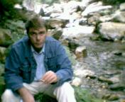
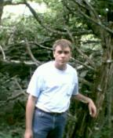

Аппалачи 2004.
"Есть ли у Вас план, мистер Шимановски?" - спрашивал я себя перед
началом грядущей экспедиции. И сам же отвечал: "Да, мистер Шимановски,
у меня есть такой план". Сперва добираемся в Эшвилл (Сев. Каролина), где
живем в гостинице 4 дня, разъезжая по окрестным туристическим объектам.
Потом - в горы с палаткой на несколько дней. Срок не регламентируется.
Сколько надо, столько и будем там жить. Главное, чтобы подальше от
цивилизации. По плану палатку предполагается поставить у черта на
куличках, точнее на краю индейской резервации в национальном парке
Великие Дымящиеся Горы. Однако запасы продовольствия и "напитков" скорее
всего ограничат наше пребывание в горах тремя-четырьмя днями.
Девятнадцатое июня, вечер. Последние приготовления накануне отбытия.
Сын заливает в машину то ли воду то ли тормозную жидкость... не знаю. Вообще
у нас в семье обслуживанием автомобилей занимаются женщины и дети. Лично я
занимаюсь более серьезными вещами, например, размышляю о Добре и Зле, или
типа того.
Вот этот гордый номер сделает тысячу-другую миль по горным дорогам.
Часть букв в кадр не вошла. Это слишком известный номер, чтобы выставлять
его на всеобщее обозрение. Первый правильно угадавший, что не попало в кадр,
получит от меня 100 долларов. Ответы принимаются до субботы.
Двадцатое июня, 7.45 утра по вашингтонскому времени. Поехали! Вот и первый
дорожный знак, встретившийся на пути. Надо же с чего-то начинать мой
репортаж. Если Вы думаете, что я буду снимать все последующие дорожные
знаки - Вы заблуждаетесь, мой друг.
Позади шесть часов езды и 280 миль. Уже заняли номер в гостинице, поспали, и
выбрались в город поужинать. Эшвилл - очень уютный городок в горах. Здесь
проводятся международные съезды уфологов и прочих аномальных товарищей. Да и
вообще, город склонен ко всевозможным модным течениям - восточная медицина,
медитация, парапсихология и пр. Различные религии - также в почете. Только
накануне здесь прошел фестиваль русской христианской рок-музыки. Помимо этого
город знаменит светофорами на крутых подъемах и бензином по 1.74. Эшвиллцы
называют свой город "Южным Парижем" Быть может, это удачное название, не знаю,
в парижах не бывал. А вот архитектура в центре города и вправду напоминает
европейскую. Настоящие каменные многоэтажные здания. Причем каждый дом -
произведение архитектурного искусства. Очень приятно встретить на нашей широте
настоящие елки. Сказывается высота над уровнем моря. Внизу они не растут,
слишком жарко.
На гродском кладбище. Казалось бы, не совсем обычное место для туристической
поездки. Но не все так просто. Вот тот камень по левую руку от меня - могила
замечательного американского писателя О'Генри. Кто не знает его "Вождя
Краснокожих" и других забавных рассказов. Никогда б не подумал, что его
могила выглядит именно так. Простой камень с полустертой надписью,
затерявшийся в тысячах себе подобных камней. Ни гробницы с ангелом, ни
золоченой изгороди, ни живых цветов. Даже народной тропы нет. Заросла.
К счастью имеется указатель размером с ладонь на кладбищенской дорожке.
Потом надо искать в нужном направлении. Любопытно что в Америке, как и в России
нет единообразия в том, как правильно писать имя этого человека: "О'Генри"
или "О.Генри". Используется и первое и второе написание.
Следующий день напомнил, что мы находимся в горах. Это перекур в дороге.
Вокруг сплошной туман. Мало того, что мы не увидим горных пейзажей, за
которыми приехали. Вождение машины в таких условиях - занятие весьма
рискованное. Что порой бывает - вы узнаете чуть ниже. В общем, что б попусту
не тратить время и здоровье мы отправились в Линвиллскую пещеру.

Речка на окраине крошечного городка Линвилл. В первой половине 19-го
века местные жители заметили странную, невиданную доселе рыбу, попадающуюся
в этой речке. Слепая форель. Нормальная, в общем-то, форель, пальчики
оближешь. Да. А глаз почему-то нет. Наконец кому-то пришло в голову проследить
откуда она берется и в верховьи одного из ручьев обнаружили пещеру, где
эта рыба живет и размножается.
Туда и мы сейчас отправимся. Надо сказать, пещера эта - цивилизованная.
В нее проведено электрическое освещение, сделаны бетонные дорожки и перила.
Вход платный и только в группе с экскурсоводом. Если Вы никогда не бывали
в настоящих пещерах, очень советую сходить. Что касается меня - я видал
пещеры гораздо более внушительные и, к тому же, весьма опасные своей
дикостью. В этой пещере тоже бывали "случаи". Сто лет назад сюда отправились
двое подростков. Конечно они никому не сказали куда пошли. Конечно,
будучи в пещере, они утопили свечу, спички и остались в темноте.
Выбирались они два дня. Ровно столько потребовалось чтобы пройти
двести метров наощупь. Спасла их речка, протекающая по дну. Они двигались
по течению, сообразив что речка выведет наружу. А вот из других пещер,
в которых я бывал, выбраться наощупь абсолютно невозможно. Зато сломать
шею - очень даже запросто.
Камень "Угадай что?". Такое необычное название. Забыл сказать, если
Вы ничего не видите на этом фото - на расстраивайтесь. Просто мой
фотоаппарат не работает в темных помещениях. Я, впрочем, сделал снимки
другим фотоаппаратом, со вспышкой. Снимки будут, но не сейчас. Так вот,
в пещере много камней, вернее сталлактитовых натеков, которые что-то
напоминают. Есть камень "Летучая Мышь", "Аллигатор", "Скелет"...
Этот камень тоже очень необычной формы, но что он напоминает - трудно
сказать. Экскурсовод обычно задает этот вопрос посетителям и мнения
расходятся. Кто-то видит цветок, кто-то медузу, кто-то слона "вид сверху".
Поэтому пока этот объект называется "Угадай что?".
Продолжение осмотра пещеры. Весьма узкая щель, где касаешься стен плечами,
заканчивается тупиком. Экскурсовод загнал туда всю группу. Вместо пола -
крупная металлическая решетка. "А теперь посмотрим вниз" - предложил
наш проводник и щелкнул рубильником. Под ногами включился фонарь и мы
увидели бездну, заполненную кристально чистой водой. Свет достигал
глубины метров 10-15. Какая там глубина в самом деле - науке не известно.
Опускали веревку длиной 60 метров и дна она не достигла. Проблема в том,
что подводная часть очень извилиста. И приборами типа "гайка на шнурке"
не обойдешься. Эхолот тоже не подходит. В общем, эта часть пещеры еще ждет
своих первопроходцев.
Питье из горного ручья - дело вкусное, полезное для здоровья, но достаточно
рискованое в плане эвелибристики на скалах. Этот ручей мне особенно дорог
почему-то. Он находится на изгибе дороги, которая очень напоминает подъем
на Ай-Петри со стороны Ялты. В Аппалачи я приезжаю уже третий год и всегда
останавливаюсь тут попить воды, да и бутылочку в дорогу набрать. Видимо, я не
один такой. На обочине - довольно наезженная площадка, одно из редких мест,
где можно съехать с дороги и остаться после этого живым. Значит, здесь часто
останавливаются машины. Интересно, есть ли название у этого источника? Если
нет, нарекаю его "Крымским Фонтаном".
Совсем рядом находится Холодная Гора, в честь которой надавно сняли
фильм. Любопытно, что съемки проводились в Карпатах.
Очередной перекур. Сбылась мечта. Верите, нет, несколько лет мечтал
искупаться в пресной воде на природе. А чего? Кто-то может мечтает
искупаться в Атлантическом океане на белом пляже под пальмами. А мне,
признаться, это надоело хуже горькой редьки. Здесь дикое каменистое
место, где ручей образует каскад водопадов и естественных ванн. В одну
из них я и погрузил свое юное тело.
То же тело, в том же ручье, но уже без ванны. Проблема в том, что надо
вцепиться в скалу по-крепче, иначе смоет в ближайший водопад. К сожалению,
без травм не обошлось. Резвясь в прохладных струях, я потерял осторожность
и грохнулся на камни, пребольно ударившись локтем. Отделался ушибом,
который болел несколько дней.
 "Сады Кригги". Местечко на высоте полутора километров. Никаких садов в
общепринятом понимании здесь нет. Кригги - это название горного хребта.
А "сады" - это потому что здесь растет множество диких цветов. Вообще,
место тут не совсем обычное для Аппалачей. Обычно вершины покрыты либо
лесом, либо безжизненными скалами. Здесь же образовался островок травы
и кустарников, цветочный рай. Так получилось, что в момент нашего
посещения многие цветы еще не распустились, а многие только что отцвели,
оставив незначительные следы былого великолепия. Впрочем, в других высотных
поясах мы встречали цветы всех сезонов. В куртке здесь не жарко, около
20 градусов. Заметим, что дело происходит в конце июня на африканских широтах.
В этот же день в родном Мертл Биче было 33 градуса и пасмурно. В горах же
можно забыть о кондиционере и наслаждаться ездой на машине с открытыми окнами,
вдыхая чудные лесные ароматы.
Совсем рядом находится наивысшая точка Аппалачей, гора Митчелл (2037м.),
названная именем ученого, который первым исследовал ее. Он погиб, совершая
восхождение и похоронен на вершине.
"Сады Кригги". Местечко на высоте полутора километров. Никаких садов в
общепринятом понимании здесь нет. Кригги - это название горного хребта.
А "сады" - это потому что здесь растет множество диких цветов. Вообще,
место тут не совсем обычное для Аппалачей. Обычно вершины покрыты либо
лесом, либо безжизненными скалами. Здесь же образовался островок травы
и кустарников, цветочный рай. Так получилось, что в момент нашего
посещения многие цветы еще не распустились, а многие только что отцвели,
оставив незначительные следы былого великолепия. Впрочем, в других высотных
поясах мы встречали цветы всех сезонов. В куртке здесь не жарко, около
20 градусов. Заметим, что дело происходит в конце июня на африканских широтах.
В этот же день в родном Мертл Биче было 33 градуса и пасмурно. В горах же
можно забыть о кондиционере и наслаждаться ездой на машине с открытыми окнами,
вдыхая чудные лесные ароматы.
Совсем рядом находится наивысшая точка Аппалачей, гора Митчелл (2037м.),
названная именем ученого, который первым исследовал ее. Он погиб, совершая
восхождение и похоронен на вершине.

Гора "Дедушка". На физиономии моей - неудовольствие. Нам эту гору
порекомендовали и сказали, что там очень здорово. Но надо платить за вход
на террирорию. Ну, поехали мы. Отчего ж не заплатить, если здорово.
На горе мы обнаружили магазин и автоматы "Кока-Кола". Асфальтированные
тропинки, знаки "прохода нет", сигнализацию о том, что кто-то свернул с
тропинки, а это запрещено. Нет не люблю я такого. Разве что для "дедушек".
Из положительного можно отметить небольшой зоопарк с местными животными
и музей природы.
Итак, вторая, палаточная, часть нашей экспедиции. Как предполагалось, прибыли
в Грейт Смоки Маунтинс, в Страну Дымящихся Гор. Понятие "национальный парк"
является аналогом нашего "государственный заповедник". Поэтому палатку можно
ставить только в разрешенных местах, например здесь, в палаточном городке
горы Бальзам, на высоте 1700 метров. Конечно, при желании можно палатку
ставить везде, но для этого нужно зарегистрировать маршрут. В первую очередь
это необходимо, чтобы люди знали где вас искать, если не вернетесь.
Ну, в нашем случае разрешение не требовалось. Ставим палатку где
разрешено. А потом можно гулять вокруг. Место это столь дикое, что можно
идти в любом направлении несколько дней, не втретив ни одного признака
цивилизации. Палаточный городок расчитан на 48 мест. Но реально мы
обнаружили около 10 палаток. Собственно, мы выбирали наиболее дикое и
удаленное место. На территории городка серьезные предупреждения
на предмет медведей. Здесь живут черные медведи. Они не столь свирепы
как их бурые родственники, да и размерами поменьше.
Животный мир сразу взял инициативу в свои руки и показал, кто здесь
хозяин. Возле кострища, металлического корыта в земле, сидела свернувшаяся
калачиком змея. Я осторожно ткнул ее хворостиной. Думаете, уползла? Дудки.
Сперва вообще не реагировала, а потом, не торопясь, забралась под кострище.
Что делать? Развести огонь - значит погубить животное. В конце концов,
пошуровав палкой, змею удалось выгнать и даже отбрость ее кусты. Мы заделали
дырки под кострищем и отправились за дровами. А вернувшись, обнаружили ту
же змею, которая пыталась залезть обратно. Увидев нас она убежала и больше
не возвращалась.
Потом пришел заяц. Он уселся в трех шагах от палатки и с задумчивым видом
откусил лист подорожника. Бросили ему кусочек яблока, но он испугался и
убежал. Потом, впрочем, тоже вернулся, но сел гораздо дальше.
Ближе к темноте в кустах за палаткой ходил олень. Когда совсем стемнело
я отправился в кусты "по небольшому личному делу". Перед лицом в лучах
фонарика мелькнули задние копыта и раздался удаляющияся галоп. От
неожиданности я чуть не сделал личное дело раньше времени.
До захода солнца удалалось поиграть на флейте, точно так же, как
описано в моем рассказе "Концерт ре минор". Играл на горе Хенитога
с видом заката над Дымящимися Горами.
Это был дивный, изумительный вечер и много планов на ближайшие дни.
В сгущающихся сумерках черная туча села на вершину Хенитоги. А ближе
к полуночи весь лагерь погрузился в густой туман. Показал своим интересный
оптический эффект, описанный в другом моем рассказе "Призрак Горных Туманов".
Все это хорошо, да, но погода настораживала все больше. Туча, как известно,
состоит из маленьких водяных капелек. И когда эта туча трется о палатку,
возникает постоянный шум, который не дает спать. После полуночи с деревьев
начала капать вода. Влага оседала на внутренней стороне непромокаемой
палатки и стекала ручейками, пропитывая одеяла и спальники. От воды
не было спасения. Ближе к утру стало холодно. Около семи утра, почти
не спавши, мне удалось еще развести костер и приготовить чай. Но
в целом ситуация развивалась по сюжету моего рассказа "Человек на склоне".
Костер едва удавалось поддерживать и стало ясно, что скоро мы останемся
без огня. Подъехавший в палаточный городок лесник сказал, что "это"
надолго, и скорого прекращения дождя не будет. В принципе, это был
не дождь. Это была черная туча, накрывшая горы. Дождь бушевал далеко
внизу, как мы потом узнали.
Утро, 25-е июня, около 10 часов. Я в палатке. Читал книжку. В принципе
терпимо, но совершенно очевидно, что нужно что-то делать. Через
пятнадцать минут мы принимаем решение покинуть лагерь, ибо нет никаких
намеков на солнце. Выехали в резервацию, где в 28 милях находится ближайший
населенный пункт, индейский городок Чероки. Там мы сможем поесть и
сориентироваться насчет погоды. Быть может проклятая туча сидит только на
нашей горе, а вокруг - солнечно. Тогда подыщем себе другое место для стоянки.
Если солнца нет нигде, придется ехать домой. Вторая мокрая ночь была
бы невыносимой.
Проехав с километр обнаружили на дороге затор в составе: машина лесника
и тягач, перегородившие и без того узкую полосу. Оказалось другая машина,
покинувшая наш лагерь около двух часов назад свалилась с дороги в тумане.
Там был крутой склон, почти обрыв. К счастью машина уперлась в дерево
и не полетела кувырком. Дерево спасло несколько молодых жизней. Это была
компания подростков лет по 17. Они, невредимые, мокли на обочине и даже
весело помахали нам вслед. А чего веселиться? Весело будет чьим-то
родителям, когда на машину посмотрят.
Дорога домой. К сожалению, солнца внизу не было. Даже напротив, если
наверху было просто холодно и мокро, внизу бушевал ливень из той самой
"нашей" тучи.
Задолбавший океан. Последняя часть путешествия, которая обещала стать самой
интересной, не получилась. Но мы пообещали себе, что обязательно вернемся на
Хенитогу. Не знаю когда, может в этом году, может в следующем, может через
десять лет. Это то место, куда нельзя не вернуться.
Так что мой репортаж не закончен, он обязательно продолжится. Надеюсь,
что скоро. Слово джентельмена.
А вот и продолжение!
Назад|На главную